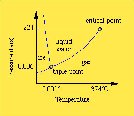

Mineral Thermodynamics - This is a prelude to mineral
associations. In your studies of systematic mineralogy you have
been noting the occurrence of minerals. Information supplied in
this section of your mineral log book should include the locations
and associated mineral assemblage (i.e., other minerals commonly
found together).
Rock - defined as an aggregate of one or more mineral. The
study of rocks is known as petrology. Petrology includes the
identification of minerals and their associated textures (size and
shapes) and abundance.
The information derived from petrology is used to understand the
origin of formation of the rock. So, not only does a petrologist
need to be a mineralogist (for identification purposes), but
she/he must also be a geochemist to know something about
conditions under which minerals undergo reaction or change .
Minerals form or disappear in response to changes in specific
physical and chemical conditions. The role of the petrologist or
geochemist is to determine the history of those changes in
conditions.
Geochemistry entails the study of a wide range of geologic environments in which minerals form. For example, these include the:
With basic knowledge from our studies of physical chemistry, it
is possible to describe the nature of a mineral phase under
certain physical conditions. The subdisciplines that provide us
with the tools to reconstruct the physical and chemical origins of
geological systems include the fields of thermodynamics,
kinetics and quantum mechanics.
Thermodynamics is the study of energy and its transformations.
Kinetics is the study of rates of reactions.
Quantum mechanics helps us study the mechanisms of chemical
reactions
Classical thermodynamics is based upon the equilibrium state. It is based upon the macroscopic (i.e., no underlying knowledge of the crystal structure is required) measure of the intrinsic properties of a mineral such as,
Using empirically derived parameters that describe the chemical
and physical state of matter, thermodynamics predicts the energy
changes for any given transformation. In essence, it tells us the
most stable state or set of phases that should be present, given
certain temperature, pressure and chemical conditions.
Thermodynamics predicts which mineral assemblages should occur in
a given environment assuming they are in chemical equilibrium.
The term phase can be use synonymously with mineral if
the mineral is homogeneous (i.e., not a
solid-solution). A phase can be considered a solid, liquid or gas
with each having its own stability region or field in
terms of pressure and temperature conditions.
Phase: Physically distinct, Mechanically separable,
homogeneous. Phases are described by independent chemical species
known as components.
e.g., Quartz, SiO2 or Kyanite, Al2SiO5
Components are the smallest number of chemical entities to
define the composition of all phases in the a system.
e.g., Si and O2 are components of quartz or Al2O3
and SiO2 are components of Kyanite
System - a quantity of material defined by weights or numbers of molecules. (imagine a container around the system, but the container is not part of the system.
Example of phase equilibrium - H2O 
Although thermodynamics tell us which reactions should take
place, it does not tell us how fast a reaction will go.
Unary systems. Examples given are H2O,
SiO2 and Al2SiO5 where each can
be considered a single component system with multiple phases at
different temperature and pressure conditions.
Anatomy of a phase or stability diagram.
Divariant area - region where both T and P can be varied
independently without changing the number of the phases present.
Univariant curve - loci of points (curve) where two phases
coexist. Only T or P can be varied independently without changing
the number of the phase present.
Triple point - The location where all three phases can
coexist. It is an invariant point where neither T, P or any other
intrinsic parameter can not be changed without causing one phase
to disappear.
The liquid-vapor curve extends to a point where the pressure is
so great that the phase remains a liquid. So great that the fluid
is often referred to as a supercritical fluid. The point in T,P
space is termed the Critical Point.
Metastability. At each invariant point there is region where the univariant curve extends beyond slightly into a third phase region. The reason for this condition is attributed to the additional energy that is required to nucleate a new phase. In the absence of nucleation energy, a metastable phase can persist into another stability region. A common example is super-cooled water (achieved by placing a bubble free container of distilled water in the freezer). When carefully removed from the freezer, a tap with a knife will cause instantaneous crystallization. This is referred to as the latent heat of crystallization and in the case of solid-gas transformation, the latent heat of vaporization.
Click here to learn more about phase relationships.